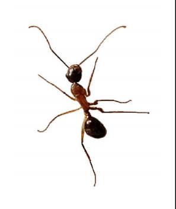

Something about
Luiz Tiago

- CTO @ MGR Tecnologia
- Pós-graduado em Desenvolvimento Mobile @ CESAR
- Graduado em Sistemas para Internet @ Marista
- Co-fundador do jQuery Brasil & Pernambuco.JS
- And more things...
Como prever o futuro?
- Ler muito
- Participar dos bons grupos e discussões
- Ou virar Mãe Dinah


Problema real
Consumir um search do twitter e montar uma lista com os últimos tweets.
Proposta 01
- Criar uma interface dos tweets usando alguma linguagem server-side para manipular os dados
- Receber um html já formatado com todos os tweets
$.ajax({
url: 'api_url',
type: 'post',
dataType: 'html',
success: function (data) {
jQuery('#tweets').html(data);
}
});
Proposta 01 - Pontos positivos
- Quase não vai ser preciso manipular os dados com JS
-
(e isso é positivo?)
Proposta 01 - Pontos negativos
- Trafega conteúdo desnecessário
(tags html, classes, id's do "template" sendo repetidos)
- Uso server-side sem necessidade
- Requests desnecessários
- Pior manutenção do código
(tags html, classes, id's do "template" sendo repetidos)
Proposta 02
- Fazer o request para o json
- Criar uma <li> de template
- Usar $.clone() ou similar
- Manipular os dados
$.ajax({
url: 'api_url',
type: 'post',
dataType: 'json',
success: function (data) {
var tweets = data.tweets;
$.each(){
$('.template-tweet').clone();
...
});
}
});
Proposta 02 - Pontos positivos
- Não precisa usar server-side
- Não trafega conteúdo desnecessário
Proposta 02 - Pontos negativos
- Maior consumo de memória
- Uso de uma biblioteca apenas para isso
- A
<li> de template ficará acessível no DOM por completo mesmo estando com display: none
<li> de template ficará acessível no DOM por completo mesmo estando com display: noneWeb Components
- Link do draft
- Atualizado em 6 Junho 2013
Web Components
- HTML Templates
- Shadow DOM
- Custom Elements
- HTML5 Imports
Proposta 03
- Fazer o request para o json
- Criar um <template> _o/
- Manipular os dados
Proposta 03 - Pontos positivos
- Não precisa usar nada server-side
- Não trafega conteúdo desnecessário
- Não precisa de server-side
- Apenas o template tem referência no DOM
- Fica "escondido" do documento
Ex.: document.querySelector('#mytemplate h2') == null
- Código é parseado mas não renderizado. Scripts não rodam, Stylesheets/images não são carregadas, media não é inicializada
- Menor consumo de memória
Ex.: document.querySelector('#mytemplate h2') == null
Proposta 03 - Pontos negativos
- Quando vamos poder usar?
FEED
- Quem lembra dela?

Tentativas
Design
IE


Ant v0.1
Ambient Light Events
- Link do Draft
Atualizado em 29 de Maio de 2013 - Detecta mudanças na iluminação do ambiente
- Atualmente só o Firefox 22+ está dando suporte
Ambient Light Events
window.addEventListener('devicelight', function(event) {
console.log(event.value);
// Retorna um inteiro de 0 a 10000 (lux)
});
Ant + Ambient Light Event
"Fear Ant"
Como se manter atualizado?
- Pernambuco.JS
- Eventos BrazilJS / *.JS / FrontIn's
- Grupos Facebook
['Javascript Brasil', 'FrontEnd Brasil', 'HTML5 Brasil', '...'] - Weekly's
['BrazilJS', 'HTML5', 'Javascript', 'CSS3', '...']